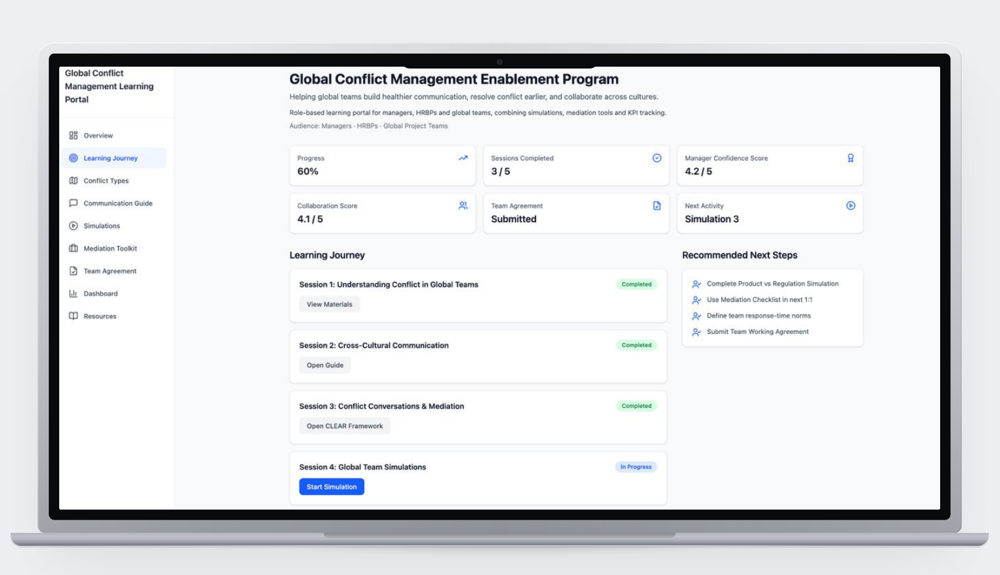
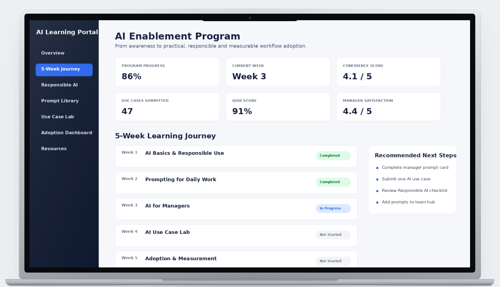
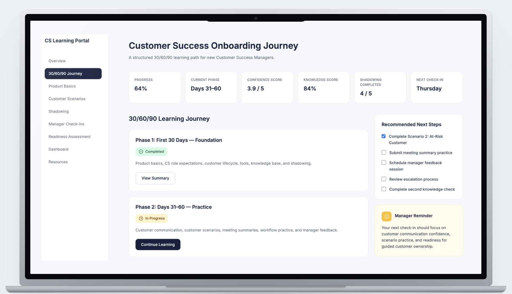
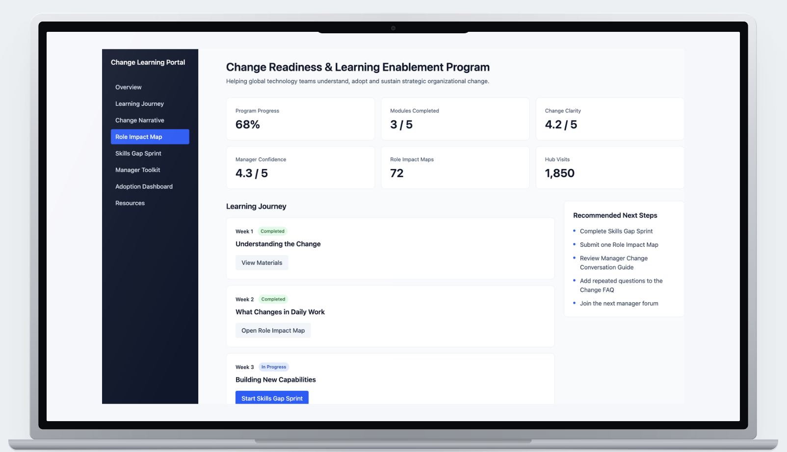

Portfolio Projects
Four applied concept projects demonstrating how I identify organizational challenges, design practical solutions, manage stakeholders, and build implementation plans with defined success metrics — across L&D, People Operations, onboarding, knowledge management, and change enablement.
ארבעה פרויקטים קונספטואליים יישומיים המדגימים כיצד אני מזהה אתגרים ארגוניים, מעצבת פתרונות מעשיים, מנהלת מחזיקי עניין ובונה תוכניות יישום עם מדדי הצלחה מוגדרים.
Portfolio projects are applied concept projects based on academic work, professional experience, and simulated organizational scenarios. Metrics shown are sample target KPIs and measurement plans, not results from a real organization.
פרויקטי תיק העבודות הם פרויקטים קונספטואליים יישומיים המבוססים על עבודה אקדמית, ניסיון מקצועי ותרחישים ארגוניים מדומים. המדדים המוצגים הם יעדי KPI לדוגמה ותוכניות מדידה — ולא תוצאות מארגון אמיתי.

Global Communication Infrastructure & Enablement
Translating academic research into a practical managerial toolkit for distributed global teams.



AI Implementation & Operational Adoption
Building AI confidence through structured enablement — turning AI from a threatening tool into a daily work method.



CSM Readiness & Time-to-Productivity Project
Structured onboarding journey reducing ramp-up time and improving employee retention from day one.



Strategic Transformation Enablement & Execution
5-week change enablement program bridging executive strategy and frontline adoption.